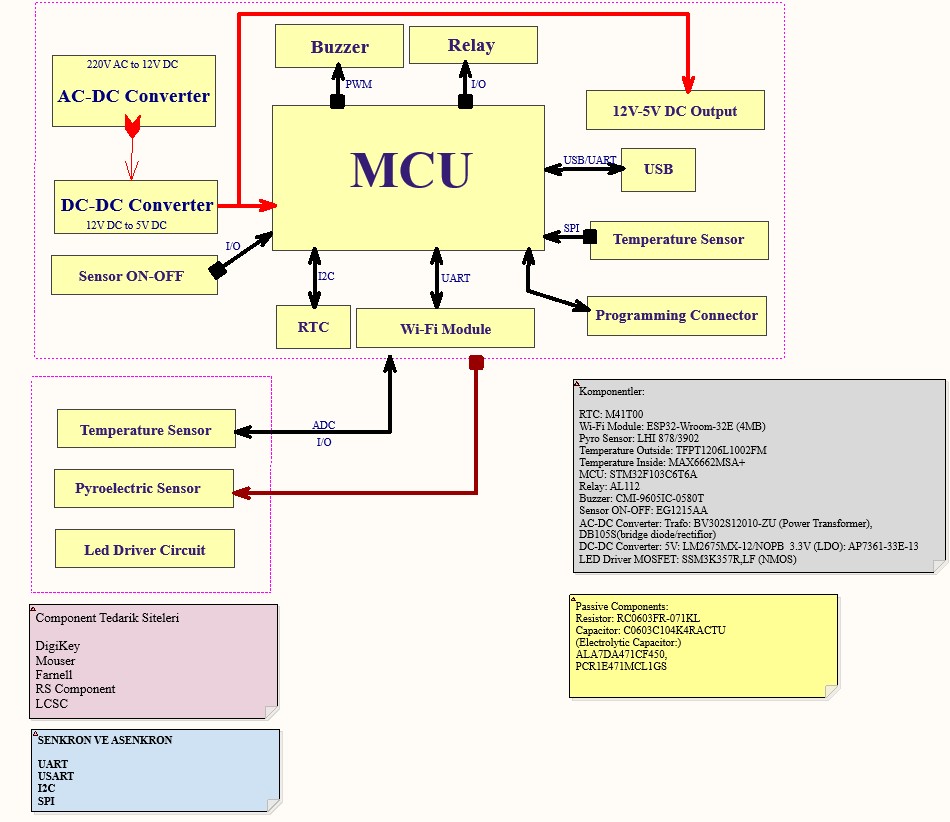
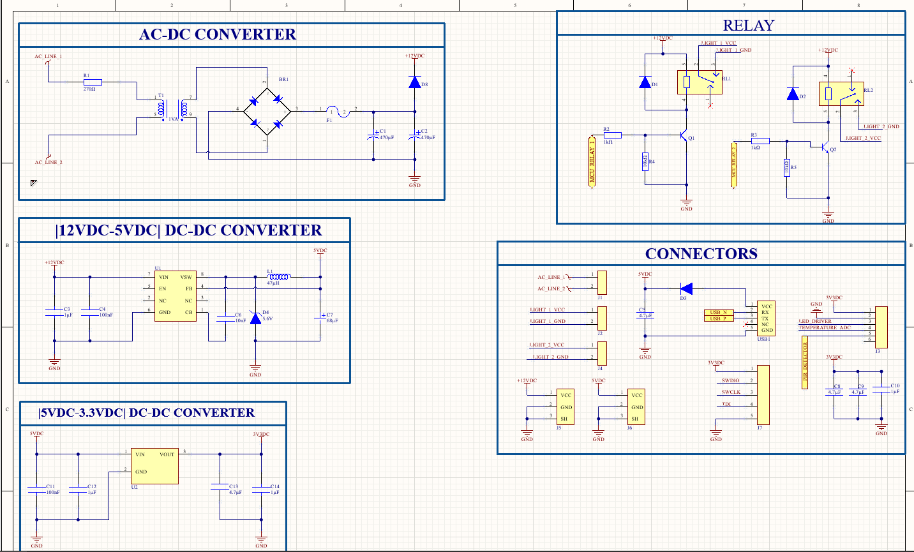
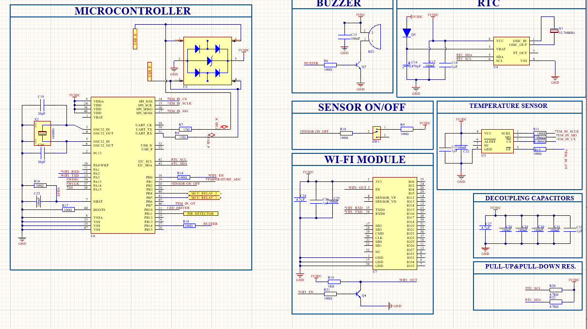
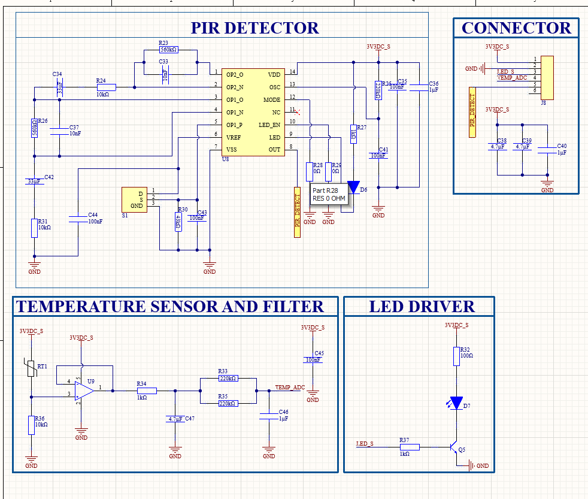
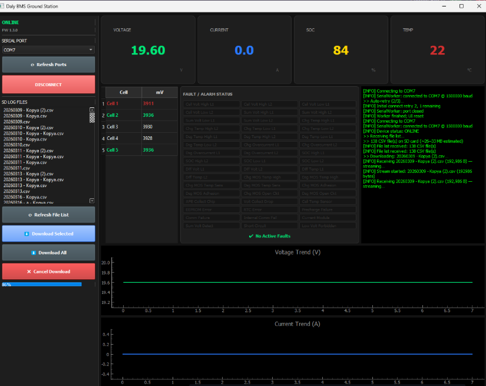
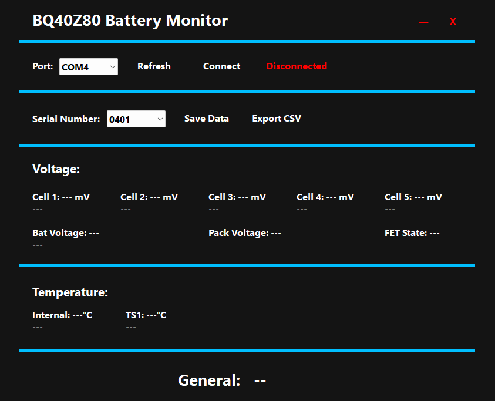
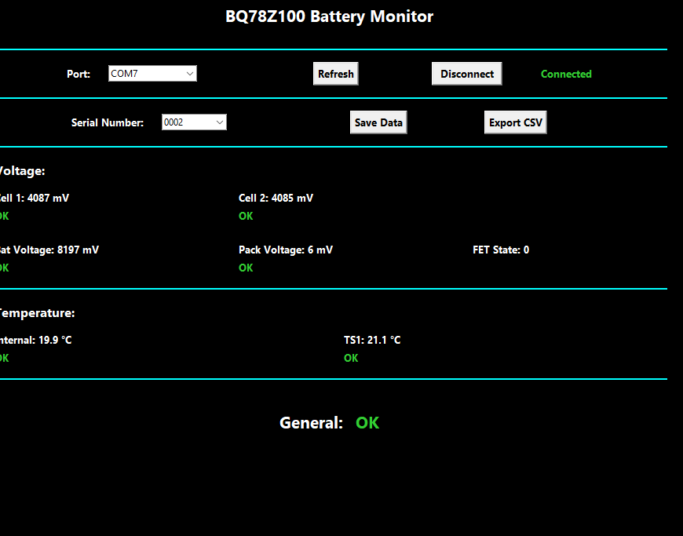
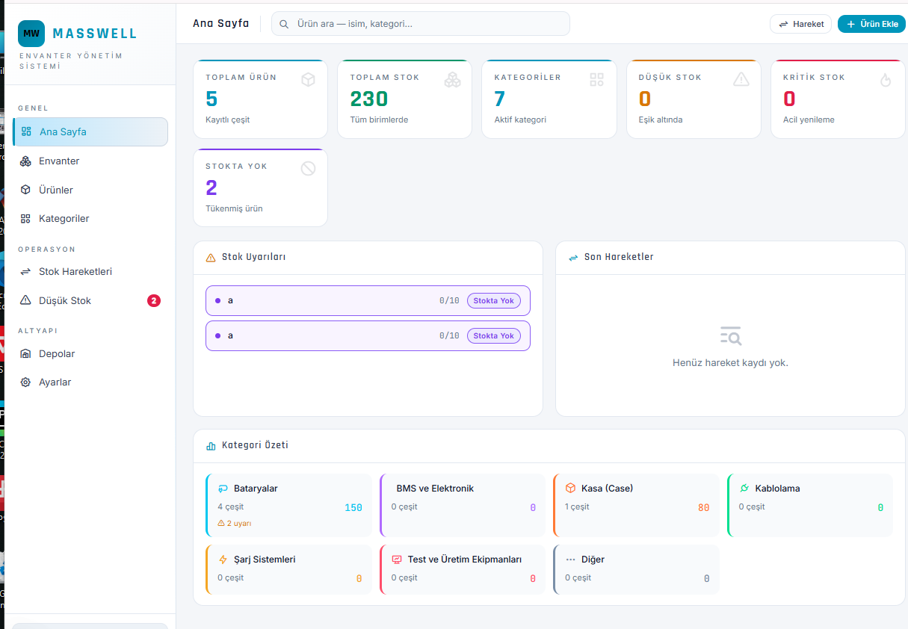

experience
My professional and research experience in engineering and embedded systems.
Engineering Intern — PCB Design
Apr 2026 – May 2026
MASSWELL — Kayseri, Turkey
Altium Designer
PCB Design
STM32
Soldering
- Led PCB design for an STM32-based smart security system, from schematic design through manufacturing files.
- Prepared PCB routing and production (Gerber) files for fabrication.
- Performed board assembly, soldering, and hardware validation testing.
Smart Security and Monitoring System — PCB Design
Altium Designer · STM32 · ESP32 · Schematic Capture · Hardware Design
Designed a complete multi-sheet PCB-based Smart Security and Monitoring System from scratch using Altium Designer. The project involved custom component library creation, schematic capture, PCB layout design, power distribution planning, signal routing, design verification, and preparation of manufacturing-ready outputs.

Power Management Design
- Designed an isolated AC-to-DC power conversion stage including transformer, bridge rectifier, filtering capacitors, and protection components.
- Developed multi-stage DC-DC power architecture (12V→5V→3.3V) to provide stable power rails for digital and analog subsystems.
- Implemented relay power circuits and a protected power distribution network for external load control.
- Selected passive components and filtering stages to improve power stability and reduce electrical noise.
- Designed connector interfaces for programming, sensors, communication modules, and external peripherals.

Microcontroller and Control Unit Design
- Designed the central STM32-based control board responsible for system monitoring, communication, and decision making.
- Integrated peripherals including ESP32 Wi-Fi module, RTC, temperature sensor, PIR detector, buzzer alarm, and relay control outputs.
- Implemented communication interfaces using UART, SPI, I²C, ADC, GPIO, and SWD programming/debug interfaces.
- Designed clock circuitry, reset circuitry, boot configuration, ESD protection, pull-up/pull-down networks, and decoupling capacitor networks.
- Performed signal routing and hardware integration considering power integrity and noise reduction requirements.

Sensor Board Design
- Designed a dedicated sensor board for environmental monitoring and intrusion detection.
- Implemented PIR motion detection circuitry including analog signal conditioning and filtering stages.
- Designed temperature sensing circuitry with analog filtering and ADC interfacing.
- Developed transistor-based LED driver circuits for visual system status indication.
- Applied analog filtering techniques to improve measurement accuracy and reduce sensor noise.

PCB Design and Verification
- Created custom schematic symbols, PCB footprints, and 3D component models directly from manufacturer datasheets.
- Designed a multi-sheet schematic architecture to improve project organization and maintainability.
- Performed PCB component placement, routing, and power trace optimization.
- Applied trace-width calculations for current-carrying power lines and optimized decoupling capacitor placement.
- Executed Design Rule Check (DRC) verification and resolved spacing, silkscreen, footprint, and routing violations.
- Generated manufacturing-ready PCB outputs including Gerber files and fabrication documentation.
Engineering Intern — Embedded Systems
Feb 2026 – Mar 2026
MASSWELL — Kayseri, Turkey
ESP32
C++
Arduino IDE
SD Card Module
MQTT
- Built a system that collects battery data over UART via ESP32 and logs it to an SD card with RTC integration.
- Designed a desktop application enabling real-time monitoring and file download without physically removing the SD card, reducing field maintenance time.
Battery Monitoring Data Logger & Desktop Application
ESP32 · C++ · Python · UART · SPI · RTC · SD Card · CSV
- Developed C++ firmware for an ESP32-based battery monitoring and data logging system.
- Implemented UART, SPI, RTC, and SD-card integration for battery parameter logging.
- Developed a Python desktop application for real-time monitoring, fault detection, file management, and data visualization.
- Optimized file transfer performance, reducing download time from approximately 50 minutes to 7 minutes.
- Implemented automatic fault detection, watchdog-based communication monitoring, and CSV export functionality.


ESP32-Based Battery Monitoring Application
Python · ESP32 · BQ78Z100 BMS · UART · JSON · CSV
- Developed a Python desktop application for monitoring battery parameters acquired through an ESP32 and BQ78Z100-based BMS.
- Implemented UART communication, data parsing, JSON-based storage, automatic record management, and CSV export.
- Designed a graphical user interface for real-time battery monitoring and diagnostics.

Engineering Intern — Communication Systems
Jul 2025 – Aug 2025
MASSWELL — Kayseri, Turkey
ESP32
C++
Arduino IDE
GSM Module
MQTT
- Implemented hardware-software integration for battery management system communication via the SIM800L module.
- Built remote monitoring infrastructure using MQTT over TCP for real-time data transmission.
Masswell Inventory Management System
JavaScript · Next.js · Supabase · Vercel · REST API
- Developed a cloud-based inventory management platform with real-time stock tracking and inventory analytics.
- Implemented product, category, warehouse, and stock movement management using Supabase.
- Integrated frontend and backend communication through REST APIs over HTTPS.
- Designed responsive user interfaces and deployed the application on Vercel.
